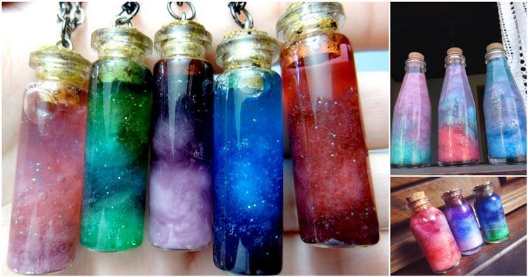

Additional Projects
Do you need more fun? How about tryng making yourself space in a bottle!?

What you will need:
A clear jar or bottle closed very tightly
Cotton balls
Silver glitter
Water
Any color of food coloring or fabric dye you want
A pencil or stick to stir
Bowls to mix colors
A funnel (Optional)
Glue and clear nail polish (Optional)
Directions
Create you first color mixture with the food coloring/dye in a bowl, then add it to your jar/bottle.
Add your cotton balls to the jar/bottle and make sure that they get completetly soaked. Press them down with a stick/pencil.
Sprinkle in some glitter into the mixture and stir slightly with the pencil/stick.
Repeat step 1 to 3, use colors that are different from the previous color! Keep doing this until you reach the top of the bottle.
Leave about half an inch at the top of the bottle/jar. If you're bottle/jar uses a cork, paint the bottom with clear nail polish/glue to prevent the color getting soaked with color.